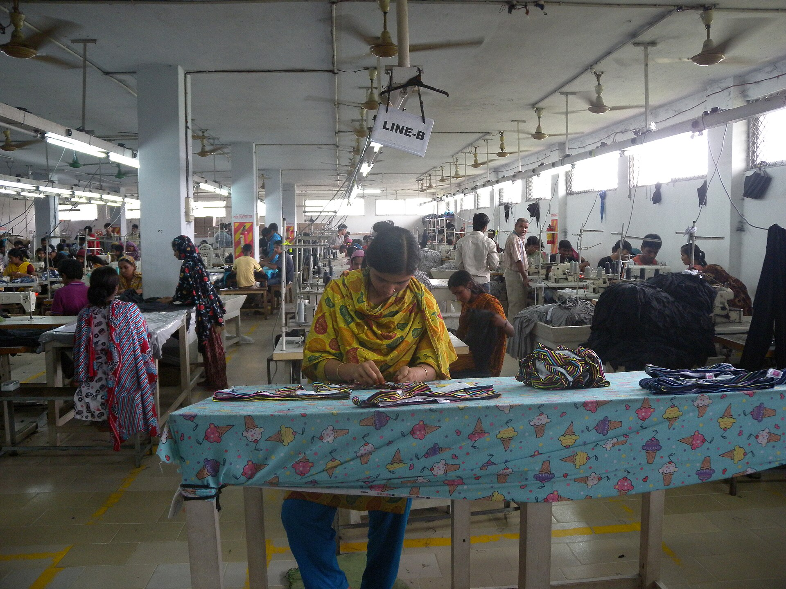

Diploma in Textile Engineeringডিপ্লোমা ইন টেক্সটাইল ইঞ্জিনিয়ারিং
Result on 30 Octফল ৩০ অক্টোবর- Sessionসেশন
- 2026–27২০২৬–২৭
- Seatsআসন
- 6,240৬,২৪০
- Applicationsআবেদন
- 41,260৪১,২৬০
Government of the People's Republic of Bangladeshগণপ্রজাতন্ত্রী বাংলাদেশ সরকার

Department of Textilesবস্ত্র অধিদপ্তর · Ministry of Textiles and Juteবস্ত্র ও পাট মন্ত্রণালয়
Find a textile institution, apply for admission, check results, verify a certificate and read official notices — from the Ministry down to every institute.টেক্সটাইল প্রতিষ্ঠান খুঁজুন, ভর্তির আবেদন করুন, ফলাফল দেখুন, সনদ যাচাই করুন এবং অফিসিয়াল নোটিশ পড়ুন — মন্ত্রণালয় থেকে প্রতিটি প্রতিষ্ঠান পর্যন্ত।
Session 2026–27সেশন ২০২৬–২৭ · Updatedহালনাগাদ 15 Oct 2026, 09:30১৫ অক্টোবর ২০২৬, ০৯:৩০ Demo dataডেমো তথ্য


59৫৯institutions connectedপ্রতিষ্ঠান যুক্ত
About the systemসিস্টেম সম্পর্কে
The Textile Institution Management System links the Ministry, divisions, districts and all 59 government textile institutions. Admissions, attendance, results, finance and assets are recorded once and seen by everyone who needs them.টেক্সটাইল প্রতিষ্ঠান ব্যবস্থাপনা সিস্টেম মন্ত্রণালয়, বিভাগ, জেলা ও ৫৯টি সরকারি টেক্সটাইল প্রতিষ্ঠানকে যুক্ত করে। ভর্তি, হাজিরা, ফলাফল, অর্থ ও সম্পদের তথ্য একবার লিপিবদ্ধ হয় এবং প্রয়োজনীয় সবাই তা দেখতে পান।
Public servicesপাবলিক সেবা
Vocational 2027 is openভোকেশনাল ২০২৭ চলছে
Diploma 2026–27 · 30 Octডিপ্লোমা ২০২৬–২৭ · ৩০ অক্টোবর
Use your application IDআবেদন আইডি দিয়ে দেখুন
Startশুরু করুনCertificate or license numberসনদ বা লাইসেন্স নম্বর
59 institutions৫৯টি প্রতিষ্ঠান
Download PDFsপিডিএফ ডাউনলোড
Certificates, transcripts, feesসনদ, ট্রান্সক্রিপ্ট, ফি
Startশুরু করুনPhase 2 · apply and verifyদ্বিতীয় পর্যায় · আবেদন ও যাচাই
Public dashboardপাবলিক ড্যাশবোর্ড
See enrolment, institutions and attendance by division. Figures are aggregated: no personal data is shown publicly.বিভাগভিত্তিক ভর্তি, প্রতিষ্ঠান ও উপস্থিতির তথ্য দেখুন। সব তথ্য সমষ্টিগত: কোনো ব্যক্তিগত তথ্য প্রকাশ করা হয় না।
8৮Textile Engineering Collegesটেক্সটাইল ইঞ্জিনিয়ারিং কলেজ
10১০Textile Institutesটেক্সটাইল ইনস্টিটিউট
41৪১Textile Vocational Institutesটেক্সটাইল ভোকেশনাল ইনস্টিটিউট
Admissionsভর্তি
You sign in with a temporary application ID while you apply. When final admission is complete, the same account becomes your student ID.আবেদনের সময় আপনি একটি অস্থায়ী আবেদন আইডি দিয়ে লগইন করবেন। চূড়ান্ত ভর্তি সম্পন্ন হলে একই অ্যাকাউন্ট আপনার শিক্ষার্থী আইডি হয়ে যাবে।
Noticeনোটিশ
No notices in this category yet. New notices appear here as soon as they are published.এই বিভাগে এখনও কোনো নোটিশ নেই। প্রকাশিত হলেই এখানে দেখা যাবে।
Learning, practicals and events across textile institutionsটেক্সটাইল প্রতিষ্ঠানগুলোর শিক্ষা, ব্যবহারিক ও অনুষ্ঠান
Helpসহায়তা
Guides, short videos and a help desk in Bangla make the system easy for every user, including first-time applicants.বাংলায় নির্দেশিকা, ছোট ভিডিও ও হেল্প ডেস্ক প্রথমবারের আবেদনকারীসহ সবার জন্য সিস্টেম সহজ করে।
Open Admissions, choose your programme and fill in the online form. You will receive an application ID by SMS.ভর্তি অংশে গিয়ে প্রোগ্রাম বেছে অনলাইন ফরম পূরণ করুন। এসএমএসে একটি আবেদন আইডি পাবেন।
Use "Forgot application ID" on the candidate sign-in page with your mobile number and date of birth.প্রার্থী লগইন পাতায় "আবেদন আইডি ভুলে গেছি" থেকে মোবাইল নম্বর ও জন্মতারিখ দিয়ে উদ্ধার করুন।
After final admission is complete at the allocated institution. Your account moves to the student portal automatically.বরাদ্দকৃত প্রতিষ্ঠানে চূড়ান্ত ভর্তি সম্পন্ন হলে। আপনার অ্যাকাউন্ট স্বয়ংক্রিয়ভাবে স্টুডেন্ট পোর্টালে যাবে।
Enter the certificate number in "Verify a certificate". Paid verification for organisations is planned for Phase 2."সনদ যাচাই" অংশে সনদ নম্বর দিন। প্রতিষ্ঠানের জন্য ফি-ভিত্তিক যাচাই দ্বিতীয় পর্যায়ে আসবে।